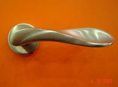
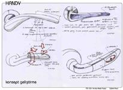
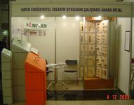

|
Ýstanbul
Teknik Üniversitesi (ÝTÜ) ve Ýstanbul Sanayi Odasý (ÝSO) iþbirliði
ile yapýlan ve 2003 Bahar dönemi mezuniyet projelerinden Çiðdem
Kaya'nýn Hakan
Metal, Handles için tasarladýðý ürün geçtiðimiz ay hayata
geçti ve ÝSO Ýkinci
Sanayi Kongresi'nde sunuldu.
ÝTÜ
ve ÝSO iþbirliði ile yapýlan mezuniyet projelerinde tüm tasarýmcý
adaylarý önce ÝSO tarafýndan belirlenen Küçük ve Orta Ölçekli
Ýþletmelerle (KOBÝ) eþleþtirildiler. Bu eþleþmeden sonra öðrenciler
firmalarýn üretim kapasitesini, üretim yöntemlerini, ürünlerin
pazarýný ve rakiplerini inceleyerek birer tasarým iþ tanýmý
oluþturdular ve bu iþ tanýmý doðrultusunda tasarýmlar yaptýlar.
Çiðdem
Kaya'nýn ÝTÜ'de mezuniyet projesi olarak tasarladýðý Handy
isimli kapý kolu projesi Hakan Metal'in projeye olumlu yaklaþýmý
ile üretilme yolunda ilerledi.
Handy'nin
çýkýþ hikayesi hem alternatif kullanýmlar arayýþýna hem de
tüketici profilinin incelenmesine dayanýyor. Handy evrensel
tasarým (universal design) yaklaþýmýna sadýk kalýnarak tasarlanmaya
çalýþýlmýþtýr. Evrensel tasarým yaklaþýmý 'kullanýcý' dendiðinde
sadece belirlenmiþ ortalama boyutlarda saðlýklý insanlarý
deðil, bedensel zorluk çeken insanlarý, sakatlarý ve yaþlýlarý
da düþünmekle baþlamaktadýr. Herkes yaþamýnýn belirli bir
kesitinde yaþlanmaya ya da kalýcý ve/veya geçici sakatlýklara
baðlý olarak fiziksel zorluklarla karþý karþýya kalabilir.
Örneðin her kullanýcý hayatýnda mutlaka en az bir kez eli
kolu doluyken kapýyý dirseðiyle açmak zorunda kalmýþtýr. Evrensel
tasarým sakatlar için tasarým demek deðildir, herkes için
tasarýmdýr. Dolayýsýyla tasarýmda dikkat edilmesi gereken
ürünün sakatlar için özelleþmiþ görünen bir gereç kimliðine
büründürmemektir.
Evrensel tasarým yaklaþýmý ile kapý kolu tasarlama çalýþmasýnýn
firmanýn sadece tasarýma bakýþý deðil satýþlarý açýsýndan
da yararlý olacaðý öngörülmüþtür. Özellikle Kuzey Amerika
ve Batý Avrupa'daki yaþlanmakta olan nüfus evrensel tasarým
ile tasarlanmýþ ürünlerin pazar payý yakalama þansý olduðunun
göstergesidir.
Handy'nin
tasarýmýnda öncelikle beyin firtýnasý ve ilk eskizler yapýlmýþ,
bunlar eþ zamanlý olarak ÝTÜ öðretim üyeleri ve 2003 Bitirme
Çalýþmasý Çekirdek Jürisi. Doç. Dr. Özlem Er ve Doç. Dr. Alpay
Er'den kritik alýnmýþtýr. Ýlk eskizler, pazar araþtýrmasý,
kullanýcý araþtýrmasý, senaryo yazýmý, evrensel tasarýmýn
kullanýldýðý çeþitli ürünlerin incelenmesinin ardýndan tasarým
alternatif tutuþ biçimlerini saðlayacak ama sakatlar için
özelleþmiþ bir görsel kimlik kazandýrmamaya da dikkat edecek
þekilde ilerlemiþtir. Alternatif tutuþ biçimi araþtýrmalarýnda
kapý kolunun paralizli, romatizmalý, kavrama zorluðu çeken
ya da eli olmayan kullanýcýlar tarafýndan da kullanýlacaðý
göz önüne alýnmýþtýr. Bilinen anlamda avuç ile kavrayarak
açýlan kapý kolunun yumruk ile, açýk avuç içi ile, dirsek
ile de açýlmasý gerektiði düþünülmüþtür. Bu çalýþmalar sýrasýnda
geliþen tasarým sürekli olarak model macunu ile yapýlan maketçiklerle
denenmiþtir.
Bu
maketçikler üzerinde tekrar Çekirdek Jüri ile çalýþýlmýþtýr.
Kapý kolunun yumruk ile, açýk avuç içi ile, dirsek ile de
açýlmasý için geniþ ve konkav bir yüzeyin uygun olacaðý düþünülmüþtür.
Son halini alan tasarýmýn dijital modeli yapýlmýþtýr. Bu modelin
Cadem A.Þ. sponsorluðunda ThermoJet
ile mum malzemeden hýzlý modeli yapýlmýþtýr. Bu master model
kullanýlarak ise silikon
bir kalýp yapýlmýþtýr.
Silikon kalýba polyester dökülüp polyester modeller kapýya
monte edilince alternatif tutuþ pozisyonlarýný saðlayýp saðlamadýðý
denenmiþtir. Bu aþamda yapýlan ÝTÜ Bitirme Jürisi'ne yapýlan
final sunumu ile Çiðdem Kaya mezun olmuþtur.
Projeye
birlikte devam kararý alýnýnca ürünün nasýl üretileceði üzerinde
çalýþýlarak tasarým yeniden gözden geçirilmiþtir. Tekrar ele
alýnan tasarýmýn yeni mum modelleri ThermoJet ile yapýlmýþtýr.
Bu yeni ürünün kalýbýnýn yapýlmasý için dijital model Hakan
Metal tarafýndan kalýp üretim atölyesine gönderilmiþ ve kalýbý
yapýlan tasarýmýn üretimine baþlanmýþtýr. Handy, ÝSO Ýkinci
Sanayi Odasý Kongresi'nde "KOBÝ'lerde Rekabet Gücü Ýçin
Pratik Yaklaþýmlar" oturumunda sunulmuþ ve sergilenmiþtir.
Tasarýmýn lansmaný Hakan Metal'in katýlacaðý Köln Fuarý'nda
yapýlacaktýr.
|